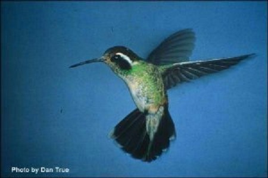

Home
Juancito Hummingbird
Juancito (which means Johnny in Spanish) was more proud of his hair than anything else. Every time his mother wanted to take him to the barber he protested so much that she finally gave in and Juancito let his hair grow till it reached almost to his waist. It was blond, curly and shiny y Juancito sometimes let it fall down his back, and other times he tied it back with a rubber-band. Even the girls envied him.
One day something very strange happened: his hair began to fall out. “Hey, Juancito,” a friend said, “what happened to your hair? Soon you’ll look like Michael Jordan.”
But Juancito didn’t want to look like Michael Jordan. All he wanted was to have his hair back. His mother took him to many doctors, among them the most well known and expensive specialists in the country. They prescribed allopathic and homeopathic medicines, unguents, Bach flowers, acupuncture and hydrotherapy and more, but nothing helped. In three weeks he was completely bald.
He was so ashamed that he refused to go to school, to the club or to church and he no longer played with his friends. He stayed at home reading, playing video games or watching television. Neither his parents nor his teachers knew what to do.
***
One day Juancito was watching TV when a commercial appeared on the screen for a magic lotion to make hair grow. A smiling man, whose teeth looked somewhat pointed, promised that the lotion would make hair grow back in three days. He had abundant hair that covered his shoulders. At the end of the commercial an 800 telephone number was announced, which meant that you could call free.
Juancito jumped up from his chair and rushed to the phone. When he called the number a recording of a woman’s soft voice told him that he should go to a certain address in the city to obtain a free sample of the magic lotion. Juancito went by subway downtown, then a bus to San Telmo, where the address indicated by the telephone voice was located.
It was an old house, one-story wooden house. Juancito pressed the doorbell and the same soft voice as on the TV asked him for his name.
“I’m Juancito and I’ve come for the magic lotion.” The door opened slowly and Juancito entered a dark vestibule. He didn’t see anyone. He waited – until finally:
“Good day,” said a deep masculine voice, which Juancito recognized as that of the man from the TV commercial. “Go into the first room on the right, please.”
Juancito was frightened and decided to leave, but when he tried to open the door to the street he found it locked.
“Good day,” the voice said again. “Go into the first room on the right,” – this time without the “please”.
Trembling from his ears to his toes, Juancito approached the indicated door and opened it. Inside the only furniture was a television set with an enormous screen in which the face of the man in the commercial smiled at him. The virtual reality picture showed that his teeth really were pointed.
“What do you want?” the man asked.
“My h-h-hair,” Juancito stuttered.
“Nothing else but that?”
“It’s very much. I’d do anything to get my hair back.”
“Do you want the same hair as before, or something better?”
The question surprised Juancito, because until that moment he only wanted to get his lost hair back and had never thought of having even better hair than he had before.
“Well,” he said, “if it’s possible to have better hair, I guess I’d prefer that.”
“That requires a special treatment which is more expensive that the normal one.”
Juancito reddened. “I don’t have any money,” he said.
The commercial man smiled. “It has nothing to do with money. Go to the safe and open it.
Juancito looked around and saw a safe embedded in the wall. He went up to it, took hold of the handle and pulled, but it didn’t open. “It’s locked,” he said.
The face in the screen burst out laughing. “Of course it’s locked. It contains something very valuable.”
“The magic lotion?” Juancito asked.
“Exactly. The combination is six-six-six.”
Juancito had a combination lock on the chain of his bike, so he knew how they worked. He turned the dial right to six, went back a full turn to six again, then back to six again.
“Well done,” the face said. “Now open it.”
This time the safe opened. Inside on a shelf Juancito saw a black bottle standing on a yellowed paper.
“Take out the bottle and the paper,” said the face.
Juancito took the two things out of the safe.
“Now put them on the table.”
Table? Juancito hadn’t seen any table. But now he turned around and saw a table and a chair in the very spot he was standing when he first entered the room. He placed the black bottle and the yellowed paper on the table.
“Sit down and sign the contract.”
Juancito sat down at the table and took up the paper, which in reality was a parchment, and tried to read it. He only recognized a few words.
“But it’s in English,” he said. I forgot to mention that Juancito lived in Buenos Aires, Argentina, and only spoke Spanish.
“Of course,” said the voice of the face in the screen. “Nowadays all important documents are in English. Sign it!”
“But what does it say?” Juancito asked, his voice trembling.
“It says that you will have hair which is more beautiful than you had before it started to fall out.”
“But there are many more words than that written here,” Juancito insisted.
“What do you care what’s written? Didn’t you say that you’d do anything to get your hair back?” Now sign it and you’ll see.”
The voice was so powerful that Juancito didn’t have the strength to disobey. He signed.
“Good. Now take off your clothes.”
“My clothes? But…”
“It’s just for a moment in order to apply the magic lotion. You don’t want to soil your clothes, do you?”
Juancito had to obey everything the voice told him. He undressed.
“Now empty the bottle over your head.”
Juancito obeyed the instructions like a robot. A thick liquid poured over his head and face and flowed over his whole body. When the bottle was empty he opened his eyes and was surprised to see that his head and the rest of his body were completely dry, with no sign of the liquid.
“Now go home and don’t come here again,” the face ordered.
Juancito looked at the screen, but it was blank. He got dressed, left the room relived and easily opened the door to the street.
*
Once home again, Juancito felt very sleepy. Although it was early and he had not yet had dinner, he got ready for bed. But first he showered with much soap and water, because he felt dirty. He looked in the mirror and saw that small hairs had begun to grow on his head. He touched them and they were soft like a baby’s. Smiling, he went to bed and fell asleep immediately without saying his prayers.
At midnight Juancito awoke from a dream which he couldn’t remember. He touched his head and felt much more hair than before. He had never touched such soft hair.
“It must be very pretty,” he thought and got up to look in the mirror. But he was surprised to see that someone had raised the mirror, because it was too high to see himself in. He stood on a chair and looked in the mirror. He nearly fainted when he saw that his head was covered with green and yellow feathers. They had even started to grow on his cheeks. He looked down and also saw feathers on his arms and legs, both of which were shorter than normal. Juancito decided that it was a nightmare and he went back to bed intending to wake up as a normal boy without feathers.
He fell asleep again and when he woke up at dawn he had turned completely into a bird. His whole body was on the pillow. He wanted to call his mother, but the only sounds that came from his mouth were: cheep-cheep. He moved his arms. Arms? They were wings of course! He flew up from the pillow and banged against the ceiling. Then he flew in circle to get used to his new condition. He passed in front of the mirror and paused in the air to look at himself. He was a beautiful hummingbird!
What to do now? What would his parents say if they found out? He decided to escape for fear that they would put him in a cage. The window was half open and Juancito – Juancito Hummingbird rather – flew out and over the city. After flying a while among the high buildings and telephone poles, he realized that the city was not a good place for birds. So he flew towards the Palermo Park, which wasn’t far from his home. He had gone there often with his father to play soccer or rent a boat or just stroll.
He as already hungry and thirsty and he wondered how he was going to find something to eat and drink. Fortunately he saw a girl hummingbird sipping water and nectar from a flower while flying stationary in the air. Juancito stopped alongside her and said “cheep”. She replied “cheep, chee-chee-cheep,” which means “Hi, what’s your name?”
“Juancito,” he answered in hummingbird language.
“What a strange name for a hummingbird!”
“Well, I’m not really a hummingbird.”
She turned her head and looked at him with one eye: “What are you then, a boy?” she laughed.
Juancito realized that she’d think he was crazy if he insisted that he was a boy. So he also laughed as though it had been a joke.
“What’s your name?” he asked.
“Delicia,” she answered. “These flowers are delicious.” And she continued to sip.
Juancito chose a flower, placed his long beak in it and sucked. Ah, how delicious! Then he passed to another flower, then another until both his hunger and thirst had been satisfied. Afterwards he and Delicia flew high over the lake, from where Juancito could see the entire city.
“Come!” Delicia called to him, and she dove down until she almost touched the water of the lake. At the last moment she braked and remained suspended in the air over the water. Juancito followed her and was able to brake in time, but not before his breast touched the water. They played all afternoon until the sun went down and they went to sleep on a high branch of a tree.
*
During the first week, Juancito very much enjoyed being a hummingbird. He flew wherever he wanted and played with Delicia and other birds. He understood the languages of all the birds in the park, but the truth is that their speech was quite limited. They spoke about their plumage, about insects and the most delicious flowers and about flying. Nothing else. When Juancito tried to introduce other subjects they didn’t understand him. He liked to get close to people and listen to them talk about more interesting things. Delicia didn’t accompany him, because she was afraid of people. Juancito knew that some bad boys threw stones at the birds and, worse still, bad men trapped them and put them in cages to sell them.
One day big cars arrived in the park and men dressed in suits got out. Juancito got close and recognized one of the men because he’d seen him on television. He was the mayor of the city. He walked through the park accompanied by an army general and followed by his retinue. They stopped in front of the statue of a Founding Father. Pipi Pigeon was sitting on its head.
“It’s a scandal!” the general shouted. “These pigeons have no respect for our heroes.
The truth is that Pipi Pigeon and the rest of the pigeons liked to stop on the monuments in order to drop their white ca-ca.
“Hmm,” said the mayor. “But what can I do? I don’t have the budget to clean them so often.”
“There’s an alternative,” the general said.
“What?”
“Fumigate the park. I have the airplane and the poison.”
“But that would kill all the birds, not only the pigeons,” the mayor objected.
“What’s more important, some birds or our heroes?” the general shouted.
The mayor, a good but weak man, could think of nothing to say except, “The heroes, I guess.”
They agreed that tomorrow at five in the morning, when no one would be in the park, the airplane would fly over and fumigate everything.
Juancito Hummingbird was horrified. He knew he had no time to lose. He flew rapidly through the trees crying to the birds that they had to flee, that the park was to be fumigated. Some birds knew what that meant, because they had once lived in fumigated fields. When they asked Juancito why the men were going to fumigate the park and Juancito told them it was because the pigeons dropped their ca-ca on the heroes’ statues, they didn’t understand, because they had always thought that the pigeons should be free to drop their ca-ca wherever they wanted. Nevertheless, they knew that people were capable of doing things that made no sense – so they fled.
The park was big and there were many species of birds, so Juancito had to fly all around it and repeat his message many times until finally all the birds had left. He stayed until the last one had gone. Then, exhausted, he landed on a hero’s head to rest.
When Juancito Hummingbird heard the airplane’s motor approaching, he flew off the statue to escape. He crossed the lake and was at the edge of the park when the airplane passed over emitting a cloud of white poison. Juancito Hummingbird could not avoid inhaling some of the poison and he fell to the ground, dead.
*
When the Amigos del Lago or Friends of the Lake, a group of neighbors, found out about the fumigation, they organized a protest march and collected a million signatures on a petition, which they presented to the mayor. He had to promise never to fumigate the park again. And the general was forced to retire by order of the country’s president.
No one could explain why the birds escaped before the fumigation, thereby avoiding a sure death. Some thought it was a miracle. A long time passed before the birds returned to the park, because the fumigation had killed the insects which they need to eat and they had to wait until others came or were born.
*
The day after the fumigation the angel who picks up the bodies of dead birds and carries them up to heaven – very seldom do we find a bird’s dead body because the angel picks them up as soon as possible – passed over the park and spotted Juancito Hummingbird’s body. He descended and was about to take it when Juancito’s guardian angel held out his hand and said: “Stop!”
“What do you want, comrade?” the angel of the birds asked.
“This isn’t a bird, it’s a boy,” the guardian angel said.
“But he signed a contract with the devil and therefore lost his boy’s soul.”
“That’s true,” the guardian angel said sadly, “but he didn’t know it was the devil and he was tricked and turned into a hummingbird.”
“He should have read the contract,” the angel of the birds insisted.
“But it was in English.”
“That's no excuse nowadays.”
“That’s also true. But look, as a hummingbird he saved all the birds in the park – which are also God’s creatures – from a terrible death.” And the guardian angel explained how Juancito Hummingbird had informed the birds about the danger which awaited them.
“Then he’s a hero,” the angel of the birds said.
“That’s also true.”
“Well, what do you want me to do?” asked the angel of the birds, who is of an angelic rank higher than a guardian angel.
“Convert him back to Juancito the Boy.”
“But he’s dead.”
“That doesn’t matter,” the guardian angel said. “The small amount of poison he inhaled isn’t enough to kill a boy.”
“Well, all right,” the angel of the birds conceded. And he touched Juancito Hummingbird’s body with his right wing. The bird-body began to grow immediately until it reached a boy’s size and then the feathers fell off.
The two angels stood there looking at Juancito-the-boy’s body.
“Now it depends on you,” the angel of the birds said.
The guardian angel knelt down and breathed into Juancito’s mouth, thereby returning life to him.
*
Juancito returned to his home, where his parents embraced him joyfully. They thought he had run away from home because his hair fell out. Juancito let them go on thinking it, because he knew they would never believe that he had been turned into a hummingbird. He returned to school and to the club and never again complained about being bald. Nevertheless, he was very glad when he turned fourteen and his hair grew in again.
The only thing he regretted was that he hadn’t had time to say goodbye to Delicia.Español